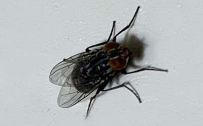
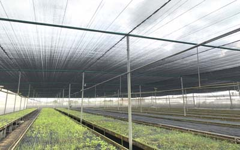

生活史及形態簡介
蠅為昆蟲綱，其下有雙翅目，環裂亞目等,成蠅體長約5-12mm,因種而異有體呈灰.黑.暗褐..等等色,或是帶有金屬光澤,全身有棕毛,(在90年代曾轟動的一部科幻恐佈電影-變蠅人,或許就有人記得他的棕毛吧),左右有兩大眼 看的角度比人類廣,間距雄窄雌寬,口器(嘴巴)為舔吸式,蠅類為完全變態(METAMOPHORSIS)之昆虫,其成長為卵-幼虫(蛆)-蛹-成虫(蒼蠅)四個階段,蠅類生活史與種類.天氣溫濕度有關,夏季生長史最為快速,蠅類滋生地通常以腐敗物質為其活動地,比方說血腥味,糞.果肉.垃圾.等等,有許多蠅類是可以在1公里就 能聞到一滴血,蠅的飛行能力非常優秀,在於它翅膀的構造,雖然人類很討厭它,但它的幼虫(蛆),在古代就有用來治療傷口,近年來在歐洲的醫學上也有用此方治療一些壞死組織或外傷後的傷口,不過這些蛆可是在無菌室專門培養的,可是也曾有發生過一些危害,是在衛生不好的安養院中,蠅飛到植物人的鼻中產卵,造成蛆食用病人的皮膚 組織

蒼蠅危害
喜溫暖氣候，其濕度高氣候基本上只要有機豐富之處,都可成為其孳生地,，在人們居住環境中以糖水或醣類一般人類食物 或是排泄物維生,其生長史為卵、幼蟲、蛹、成蟲，成蟲之壽命依不同科類有所不同，一般為10天,由其以腐敗動植物.糞便.垃圾最為適合,除少數蠅有刺吸口氣(專門吸血的蠅),一般的蠅為吸舔式口器(嘴巴),蠅覓食很頻繁,可以邊吃.邊吐.還有同時排泄的習慣,平常人想到應該是會覺得很 噁心,它這行為可是非常容易傳播細菌(傳染病),蠅的活動受光線影響,夜間喜歡停在天花板或一些線條狀的繩索類品上,一般而言蒼蠅喜歡停留粗糙物體表面,其飛行能力 及技巧非常強,是科學家喜歡研究飛行昆虫之一,飛行時可急速轉彎,每小時可飛6-8公里,活動範圍在1-2公里,可隨風或交通工具散播更遠處,因此防治消毒方法必需整個社區或是地區執行較有效果.

蒼蠅消毒
環境改善:（environmental control）此法是最有效果,是治理根本,且最環保,避免生活垃圾,清理環境及人畜等排泄物,90年代前台北市野狗成群,民眾養狗隨地大小便,垃圾未實施垃圾不落地政策時,當時在都市就可常見蠅的蹤跡,因此改善環境是最重要手段
物理方法:可 放黏蠅板,暗房走道使用捕蠅燈.捕蠅繩.捕蠅桶..加設紗門紗窗,空氣簾阻斷蠅類的入侵及發生，以減少蒼蠅的危害,將家禽家畜之糞便利用日曬或烘乾去除水分 或是將其掩埋,避免蒼蠅之發生。
生物防治:螳螂.蜻蜓.蓋斑鬥魚.豬籠草等做消滅,香辛辣物作忌避,效果有限需搭配使用; 天然樟腦作忌避,取得不易價格昂貴,現今全世界樟腦丸(油)絕大多數為化學製品.
化學防治:治標或緊急防治時才採用化學防除法（chemical control）藥劑的選擇， 來施做消毒,須採用政府衛生單位及環境保護署登記核准使用之藥劑及使用方法，以免誤用或亂用導致其他不良作用或對環境之損害。.